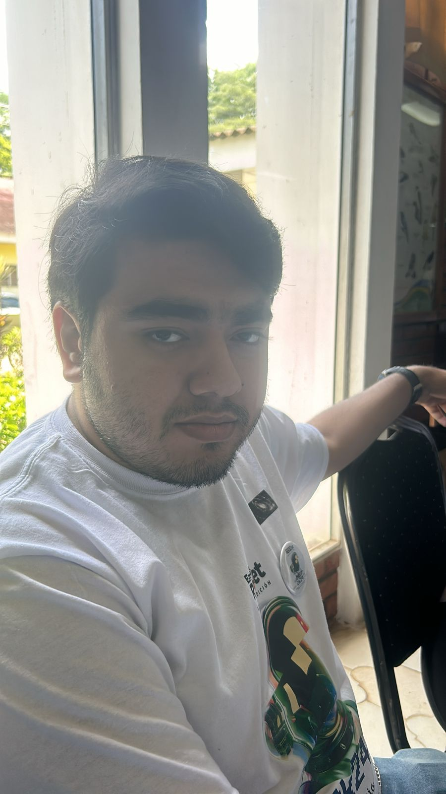

Juan Pérez
Ubicación: Valle de Comayagua, Honduras
Experiencia: 10 años en agricultura sostenible
Métodos: Biodigestores, compostaje orgánico, manejo de residuos
Ubicación: Valle de Comayagua, Honduras
Experiencia: 10 años en agricultura sostenible
Métodos: Biodigestores, compostaje orgánico, manejo de residuos